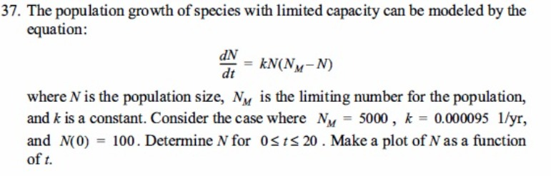

Problema:

El crecimiento de la población de especies con capacidad limitada puede modelarse con la ecuación:
$$ \frac{dN}{dt} = kN(N_M - N) $$
donde \(N\) es el tamaño de la población, \(N_M\) es el número límite para la población, y \(k\) es una constante. Considere el caso donde \(N_M = 5000\), \(k = 0.00095 \text{ 1/yr}\), y \(N(0) = 100\). Determine \(N\) para \(0 \le t \le 20\). Haga una gráfica de \(N\) en función de \(t\).